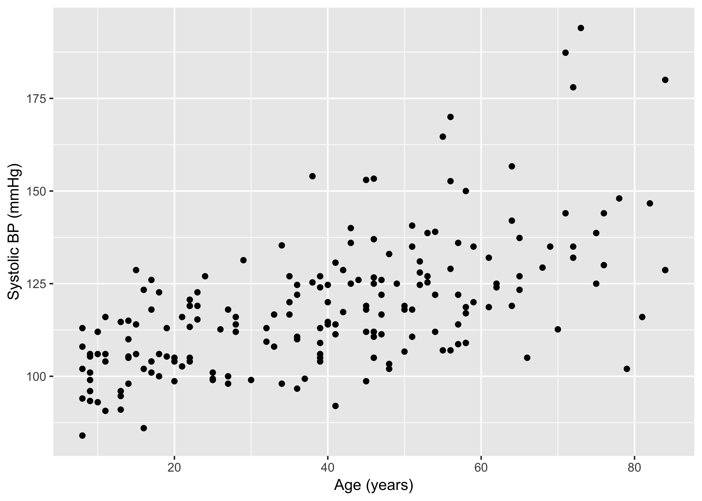
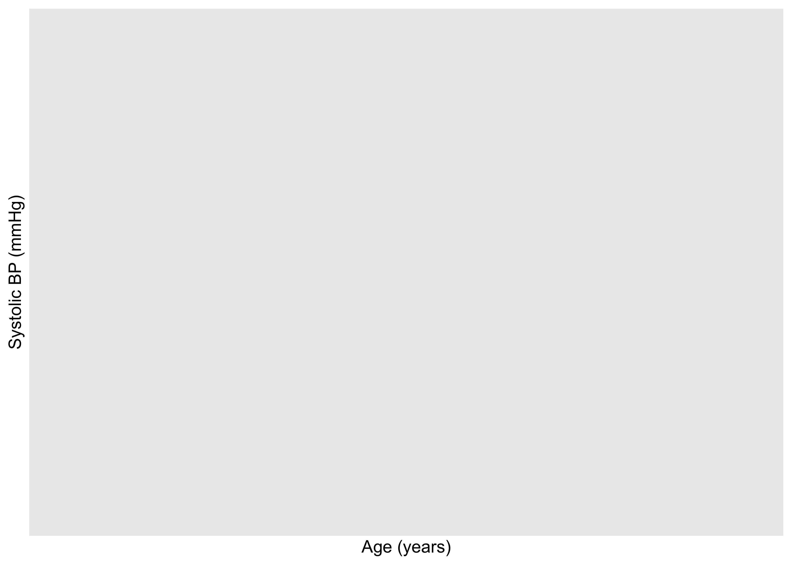
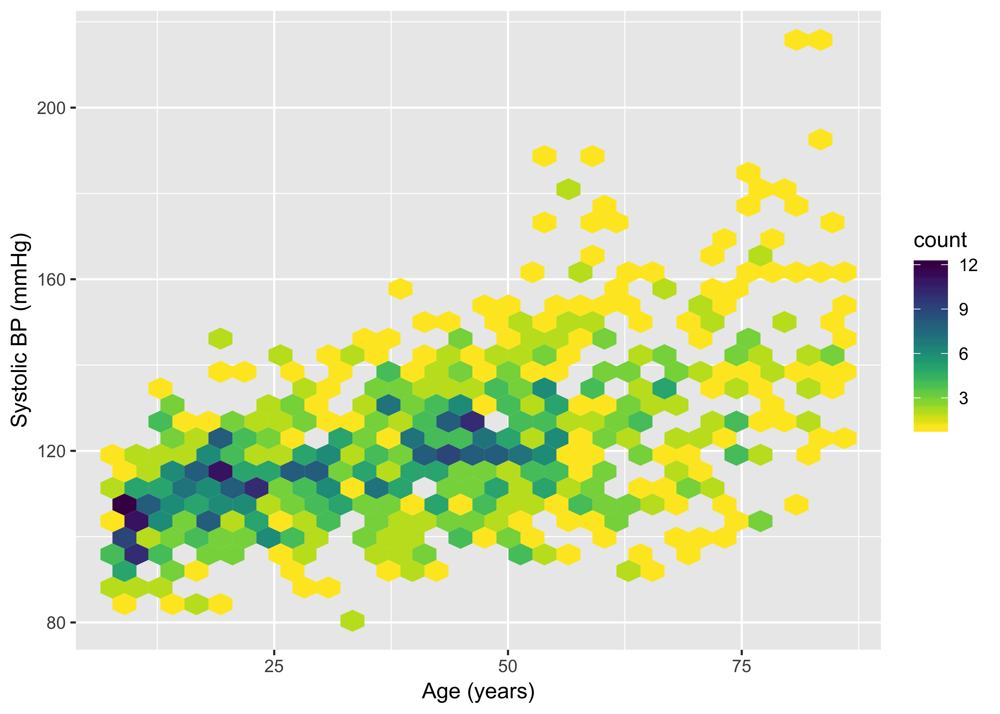
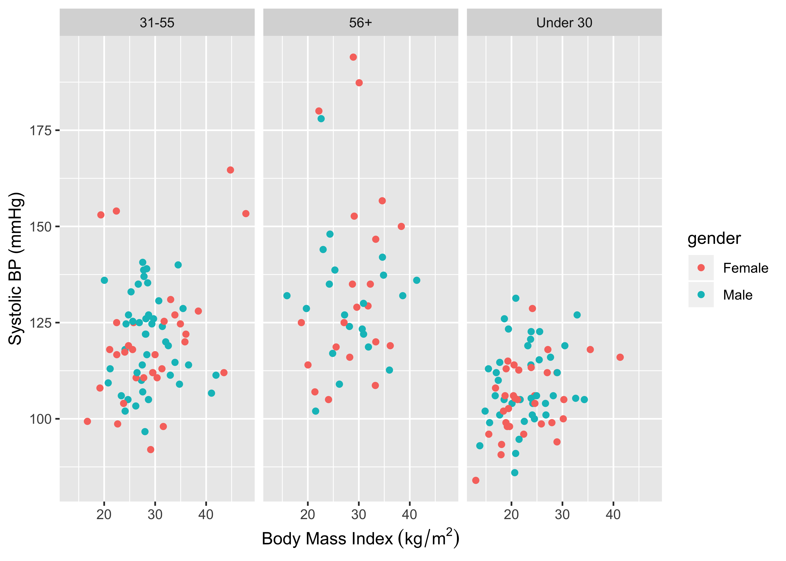
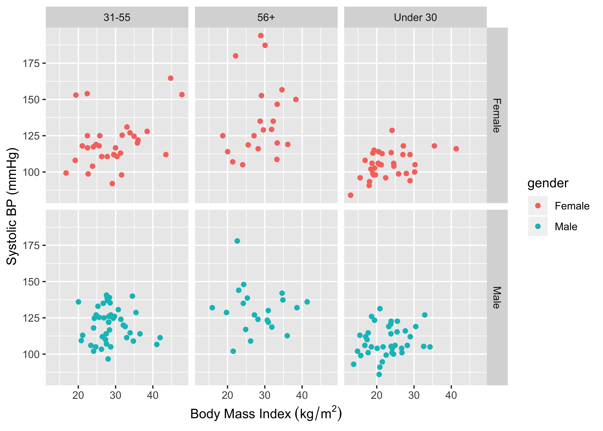
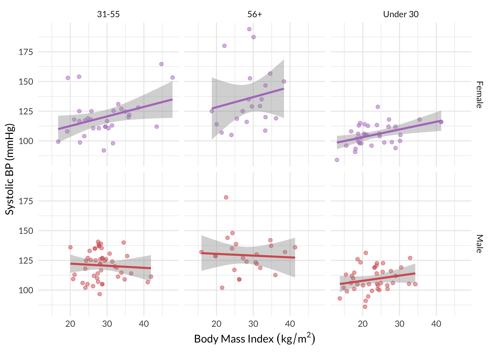

Class Meeting 1.2 (cm012)
Lab: Tidyverse Basics (Solutions)
Alison Hill
6/28/2018
Overview
A complete knitted html file is due on Sakai by beginning of class Tuesday July 3rd (2:30pm).
Set-up
- Load the
tidyversepackage (must be installed first! Do not install packages within your scripts) - Using
readrpackage, we import our csv withread_csvfunction - The first argument in the
read_csv()parentheses is the url to the dataset - The second argument,
na = ".", specifies that missing data in this dataset is denoted by a period - Finally, we assign the data to an R object using
<-and call that objectheart
Data Dictionary
From the data dictionary:
BPXSAR: systolic blood pressure (mmHg)BPXDAR: diastolic blood pressure (mmHg)BPXDI1,BPXDI2: two diastolic blood pressure readingsrace_ethc: race/ethnicity, coded as:- Hispanic,
- White non-Hispanic,
- Black non-Hispanic and
- Other
gender: sex, coded as Male/FemaleDR1TFOLA: folate intake (μg/day)RIAGENDR: sex, coded as 1/2BMXBMI: body mass index (kg/m2)RIDAGEY: age (years)
1. How many rows and columns are in the heart data?
# A tibble: 200 x 10
BPXSAR BPXDAR BPXDI1 BPXDI2 race_ethc gender DR1TFOLA RIAGENDR BMXBMI
<dbl> <dbl> <int> <int> <chr> <chr> <int> <int> <dbl>
1 129. 50.7 48 48 White no… Male 334 1 19.7
2 117. 75.3 76 78 White no… Male 656 1 28.4
3 127 80 76 76 White no… Male 220 1 24.8
4 105 60 64 56 White no… Female 199 2 30.3
5 113 57 54 56 White no… Male 541 1 21.2
6 141. 82.7 80 78 White no… Male 262 1 27.6
7 125 57 52 NA White no… Female 203 2 18.7
8 135 75 NA 80 White no… Female 178 2 32.3
9 123. 74 76 NA White no… Male 1027 1 19.4
10 131. 84.7 90 80 White no… Male 571 1 30.7
# ... with 190 more rows, and 1 more variable: RIDAGEYR <int>2. Use dplyr to answer these questions:
- What is the minimum age in years?
- What is the maximum age in years?
# A tibble: 200 x 10
BPXSAR BPXDAR BPXDI1 BPXDI2 race_ethc gender DR1TFOLA RIAGENDR BMXBMI
<dbl> <dbl> <int> <int> <chr> <chr> <int> <int> <dbl>
1 113 47 44 NA White no… Male 340 1 15.5
2 102 58 62 62 Black no… Male 836 1 14.8
3 108 75 70 NA White no… Female 466 2 16.9
4 94 52 52 NA White no… Female 1231 2 28.9
5 84 52 52 NA Hispanic Female 295 2 13
6 93.3 44.7 38 44 Black no… Female 309 2 18.1
7 96 61 66 64 White no… Female 135 2 15.6
8 101 59 58 60 White no… Male 205 1 17.7
9 99 61 56 60 Other Male 812 1 15.7
10 105. 58.7 58 58 Hispanic Male 593 1 32.6
# ... with 190 more rows, and 1 more variable: RIDAGEYR <int># A tibble: 200 x 10
BPXSAR BPXDAR BPXDI1 BPXDI2 race_ethc gender DR1TFOLA RIAGENDR BMXBMI
<dbl> <dbl> <int> <int> <chr> <chr> <int> <int> <dbl>
1 129. 50.7 48 48 White no… Male 334 1 19.7
2 129. 50.7 48 48 White no… Male 334 1 19.7
3 180 82 82 NA White no… Female 238 2 22.2
4 147. 60.7 60 62 White no… Female 136 2 33.3
5 116 58 48 64 White no… Female 192 2 28.2
6 102 56 56 NA White no… Male 81 1 21.5
7 148 80.7 NA 80 White no… Male 690 1 24.3
8 130 84 84 86 White no… Male 179 1 30.9
9 144 74 74 NA Other Female 70 2 NA
10 125 63 58 68 White no… Female 224 2 27.1
# ... with 190 more rows, and 1 more variable: RIDAGEYR <int>If this is easy for you: there are actually (at least) 4 ways to do this with dplyr functions. Try to figure out four ways to do this!
# A tibble: 3 x 10
BPXSAR BPXDAR BPXDI1 BPXDI2 race_ethc gender DR1TFOLA RIAGENDR BMXBMI
<dbl> <dbl> <int> <int> <chr> <chr> <int> <int> <dbl>
1 129. 50.7 48 48 White no… Male 334 1 19.7
2 129. 50.7 48 48 White no… Male 334 1 19.7
3 180 82 82 NA White no… Female 238 2 22.2
# ... with 1 more variable: RIDAGEYR <int># A tibble: 5 x 10
BPXSAR BPXDAR BPXDI1 BPXDI2 race_ethc gender DR1TFOLA RIAGENDR BMXBMI
<dbl> <dbl> <int> <int> <chr> <chr> <int> <int> <dbl>
1 113 47 44 NA White no… Male 340 1 15.5
2 102 58 62 62 Black no… Male 836 1 14.8
3 108 75 70 NA White no… Female 466 2 16.9
4 94 52 52 NA White no… Female 1231 2 28.9
5 84 52 52 NA Hispanic Female 295 2 13
# ... with 1 more variable: RIDAGEYR <int># way three with filter!
heart %>%
filter(RIDAGEYR == min(RIDAGEYR) | RIDAGEYR == max(RIDAGEYR)) %>%
arrange(RIDAGEYR)# A tibble: 8 x 10
BPXSAR BPXDAR BPXDI1 BPXDI2 race_ethc gender DR1TFOLA RIAGENDR BMXBMI
<dbl> <dbl> <int> <int> <chr> <chr> <int> <int> <dbl>
1 113 47 44 NA White no… Male 340 1 15.5
2 102 58 62 62 Black no… Male 836 1 14.8
3 108 75 70 NA White no… Female 466 2 16.9
4 94 52 52 NA White no… Female 1231 2 28.9
5 84 52 52 NA Hispanic Female 295 2 13
6 129. 50.7 48 48 White no… Male 334 1 19.7
7 129. 50.7 48 48 White no… Male 334 1 19.7
8 180 82 82 NA White no… Female 238 2 22.2
# ... with 1 more variable: RIDAGEYR <int># way four with filter!
heart %>%
filter(RIDAGEYR %in% c(min(RIDAGEYR), max(RIDAGEYR))) %>%
arrange(RIDAGEYR)# A tibble: 8 x 10
BPXSAR BPXDAR BPXDI1 BPXDI2 race_ethc gender DR1TFOLA RIAGENDR BMXBMI
<dbl> <dbl> <int> <int> <chr> <chr> <int> <int> <dbl>
1 113 47 44 NA White no… Male 340 1 15.5
2 102 58 62 62 Black no… Male 836 1 14.8
3 108 75 70 NA White no… Female 466 2 16.9
4 94 52 52 NA White no… Female 1231 2 28.9
5 84 52 52 NA Hispanic Female 295 2 13
6 129. 50.7 48 48 White no… Male 334 1 19.7
7 129. 50.7 48 48 White no… Male 334 1 19.7
8 180 82 82 NA White no… Female 238 2 22.2
# ... with 1 more variable: RIDAGEYR <int>3. Use dplyr to do the following:
- Make a new variable in
heartcalledRIDAGEMOSthat convertsRIDAGEYRto months. - For individuals 960 months or older, what is the range of BMI values?
- For individuals exactly 96 months of age, what is the range of BMI values?
heart <- heart %>%
mutate(RIDAGEMOS = RIDAGEYR*12)
# range: 19.7-33.3
heart %>%
filter(RIDAGEMOS >= 960) %>%
arrange(BMXBMI)# A tibble: 5 x 11
BPXSAR BPXDAR BPXDI1 BPXDI2 race_ethc gender DR1TFOLA RIAGENDR BMXBMI
<dbl> <dbl> <int> <int> <chr> <chr> <int> <int> <dbl>
1 129. 50.7 48 48 White no… Male 334 1 19.7
2 129. 50.7 48 48 White no… Male 334 1 19.7
3 180 82 82 NA White no… Female 238 2 22.2
4 116 58 48 64 White no… Female 192 2 28.2
5 147. 60.7 60 62 White no… Female 136 2 33.3
# ... with 2 more variables: RIDAGEYR <int>, RIDAGEMOS <dbl># A tibble: 5 x 11
BPXSAR BPXDAR BPXDI1 BPXDI2 race_ethc gender DR1TFOLA RIAGENDR BMXBMI
<dbl> <dbl> <int> <int> <chr> <chr> <int> <int> <dbl>
1 84 52 52 NA Hispanic Female 295 2 13
2 102 58 62 62 Black no… Male 836 1 14.8
3 113 47 44 NA White no… Male 340 1 15.5
4 108 75 70 NA White no… Female 466 2 16.9
5 94 52 52 NA White no… Female 1231 2 28.9
# ... with 2 more variables: RIDAGEYR <int>, RIDAGEMOS <dbl>4. Use ggplot2 to make a scatterplot with age in years on the x-axis and systolic blood pressure on the y-axis.
ggplot(heart, aes(x = RIDAGEYR, y = BPXSAR)) +
geom_point() +
labs(x = "Age (years)", y = "Systolic BP (mmHg)")
If this was easy: import the larger dataset (http://faculty.washington.edu/kenrice/heartgraphs/nhaneslarge.csv) and make a hexagonal heatmap of 2d bin counts. Apply a custom continuous color palette to the hexbins, and reverse the colors such that lighter colors are for lower counts and darker colors are for higher counts.
big_heart <- read_csv("http://faculty.washington.edu/kenrice/heartgraphs/nhaneslarge.csv",
na = ".")
ggplot(big_heart, aes(x = RIDAGEYR, y = BPXSAR)) +
geom_hex() +
labs(x = "Age (years)", y = "Systolic BP (mmHg)")
library(viridis)
ggplot(big_heart, aes(x = RIDAGEYR, y = BPXSAR)) +
geom_hex() +
labs(x = "Age (years)", y = "Systolic BP (mmHg)") +
scale_fill_gradientn(colours = viridis(256, begin = 1, end = 0))
5. Use dplyr and ggplot2 to do the following:
- Type
?case_whento read the help documents for thisdplyrfunction. Look carefully at the examples (hint: you might find thestar_warsexample most helpful- you can run that code in your console!). Use this function to make a new variable calledage_catwith 3 values:between(<name_of_age_var>, 0, 30)isage_cat == "Under 30"between(<name_of_age_var>, 31, 55)isage_cat == "31-55"- all other ages are
age_cat == "56+"
- Create a scatter plot with bmi on the x-axis and blood pressure on the y-axis, facetting by your new
age_catvariable. Color the points bygender. - Look up
?facet_grid, and recreate the same plot now usinggender ~ age_cat.
heart <- heart %>%
mutate(age_cat = case_when(
between(RIDAGEYR, 0, 30) ~ "Under 30",
between(RIDAGEYR, 31, 55) ~ "31-55",
TRUE ~ "56+"))ggplot(heart, aes(x = BMXBMI, y = BPXSAR, color = gender)) +
geom_point() +
facet_wrap(~age_cat) +
labs(x = "Body Mass Index"~(kg/m^2), y = "Systolic BP (mmHg)")
If this was easy, add linear regression lines to all six facetted grids (keep the standard error ribbons). Apply a custom color palette and remove the color legend guide. Play with alpha levels for the points. Use something other than the default theme_gray(). Maybe throw in a different font, too.
ggplot(heart, aes(x = BMXBMI, y = BPXSAR, color = gender)) +
geom_point() +
facet_grid(gender ~ age_cat) +
labs(x = "Body Mass Index"~(kg/m^2), y = "Systolic BP (mmHg)")
library(extrafont)
ggplot(heart, aes(x = BMXBMI, y = BPXSAR, colour = gender)) +
geom_point(alpha = .5) +
stat_smooth(method = "lm") +
facet_grid(gender ~ age_cat) +
theme_minimal() +
labs(x = "Body Mass Index"~(kg/m^2), y = "Systolic BP (mmHg)") +
scale_color_manual(values = c("#B47CC7", "#D65F5F"), guide = FALSE) +
theme(text = element_text(family = "Lato"))